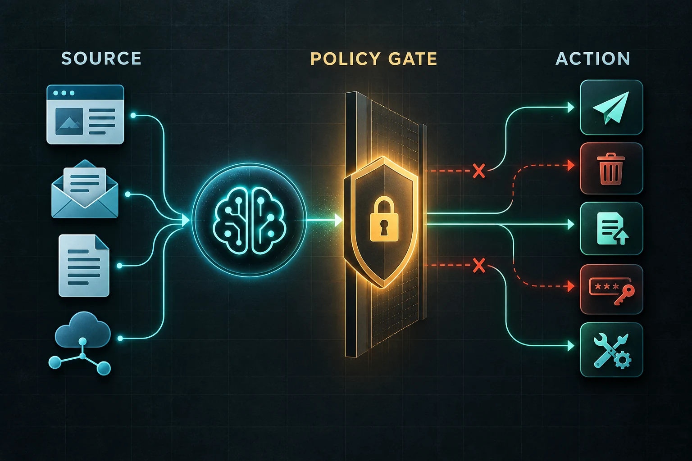

Prompt injection is not just a bad prompt: map the source and the action
Published September 28, 2026 · HomeForge
The dangerous part of a prompt injection is not the sentence hidden in a webpage. It is the action an AI agent can take after reading that sentence.
An assistant that only summarizes a public page has a smaller blast radius than one that can also read private files, send messages, change cloud data, or open links while signed in. That makes prompt injection a systems problem: untrusted content enters through a source, then tries to reach a consequential action.
This guide turns that idea into a checklist you can use before connecting an agent to browsers, email, cloud storage, code repositories, or Model Context Protocol tools.

1. List every source the agent can read
Start with material an attacker or third party can influence:
- webpages and search results;
- email bodies and attachments;
- shared documents and comments;
- repository files, issues, and pull requests;
- MCP tool results and connector data;
- persistent notes or memory loaded from an earlier session.
Do not assume a trusted connector makes every returned document trustworthy. Anthropic gives the example of a reviewed GitHub connector loading a poisoned README into an agent's context. The software path may be approved while the content remains attacker-controlled.
2. List every sink that can create harm
OpenAI describes agentic prompt injection with a source-and-sink model. A sink is a capability that becomes dangerous in the wrong context. Common examples include:
- sending data to a third party;
- publishing or editing a public post;
- deleting or moving cloud data;
- running code or shell commands;
- using a credentialed browser session;
- approving a purchase or changing permissions;
- writing to persistent memory that future sessions will trust.
The same untrusted email has a different risk profile when the agent can only summarize it than when the agent can also forward attachments or update account settings.
3. Draw the shortest path between them
For each source, ask which sinks it can influence. The most useful diagram is usually small:
untrusted page -> agent context -> tool arguments -> external action
Then mark the deterministic controls on that path. A classifier or model instruction can reduce risk, but it is probabilistic. A permission boundary, schema validator, network rule, or tool-level policy can block a class of actions even when the model is persuaded.
4. Pass facts across trust boundaries, not prose
When possible, isolate untrusted material and extract only the fields the next step needs. Instead of sending a whole email thread into a payment tool, pass a validated invoice number, vendor identifier, currency, and amount. Instead of letting a webpage choose a tool call, require the application to map a small set of allowed values into a fixed operation.
OpenAI's agent safety guidance recommends preventing untrusted data from directly driving agent behavior and using validated structured fields between steps. Structure reduces the room available for hidden instructions. It does not prove the content is true, so the application still needs authorization and business-rule checks.
5. Put review beside the side effect
A broad input guardrail at the start of a workflow does not automatically protect every later tool call. Put validation at the boundary that creates the effect.
For a message send, review the recipient, exact body, attachments, and sending identity. For a file deletion, review the exact files and scope. For a public post, review the destination account and final media and copy. Resume the same paused operation after approval; do not start a second attempt that can create a duplicate.
6. Cap the blast radius before trusting detection
Assume one malicious instruction eventually gets through. Then ask what it can reach.
- Keep credentials outside the agent's runtime when they are unnecessary.
- Prefer read-only access for research tasks.
- Limit filesystem writes to the active workspace.
- Deny network access by default when the task does not need it.
- Use separate identities and short-lived tokens for automated work.
- Test new connectors against fake data first.
Anthropic's containment guidance makes the same point: the environment defines what the agent is able to do, while model-layer defenses influence what it tends to do. Those layers should overlap.
7. Treat persistent memory as another sink
A one-time injection can become a recurring problem if it is written into a note, project instruction, or memory record that loads at startup. Store provenance with durable records: source, observation time, review state, and expiration or replacement rule. Re-scan persistent context before loading it into a privileged workflow.
A five-minute preflight
Before enabling a new agent connection, answer five questions:
- Which content can outsiders influence?
- Which tools can transmit, modify, delete, spend, or publish?
- Can raw outside text reach those tools?
- What deterministic boundary limits the worst result?
- What receipt proves the final action, and how will an ambiguous attempt be reconciled?
If you cannot answer those questions, adding a longer system prompt is not the first fix. Narrow the tools, isolate the content, and put policy beside the action.
Sources
- OpenAI: Designing AI agents to resist prompt injection, for the source-and-sink framing and the goal of constraining impact when manipulation succeeds.
- OpenAI API: Safety in building agents, for structured handoffs, tool approvals, guardrails, and trace evaluation.
- OpenAI API: Guardrails and human review, for placing validation at tool boundaries and resuming paused runs.
- Anthropic: How we contain Claude across products, for environment, model, and external-content defenses and the poisoned connector-output example.
Get the free Starter Kit →